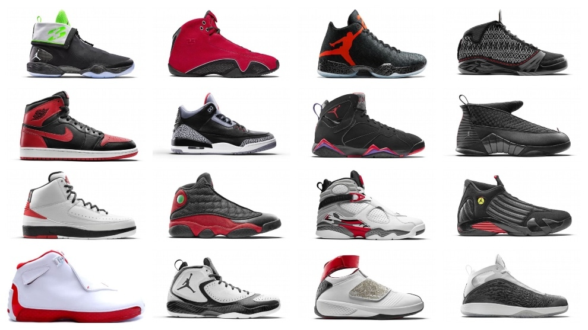

Es uno de los mayores proveedores de material deportivo del mundo solamente bajo Adidas, con unos ingresos de más de 24,100 millones de dólares estadounidenses y un total en 2019 de unos 76.700 empleados. La marca por sí sola tiene un valor de 47,400 millones de dólares estadounidenses, lo que la convierte en la marca más valiosa entre las corporaciones deportivas.
Nike tiene más de 500 lugares en todo el mundo y oficinas en 45 países fuera de Estados Unidos. La mayoría de las fábricas están situadas en Asia, incluyendo Indonesia, China, Taiwán, India, Tailandia, Vietnam, Pakistán, Filipinas, Malasia, y la República de Corea.
Nike fábrica una amplia gama de equipamiento deportivo. Sus primeros productos fueron zapatos de pista para correr. En la actualidad también se hacen zapatos, camisetas, pantalones cortos, y demás accesorios, para una amplia gama de deportes, incluyendo atletismo, béisbol, hockey sobre hielo, tenis, fútbol, lacrosse, baloncesto, y el cricket.
En 1985 se diseñaron las Air Jordan I a partir de los materiales más innovadores y de mejor calidad del momento. El icono afianzó para siempre la historia de las zapatillas, pero la línea Air Jordan ha seguido evolucionando a partir de sus predecesoras.
Los Air Jordan 1 son una especie de santo grial en el mundo de los tenis. Básicamente, comparten muchas de las cualidades que caracterizan a su homónimo, Michael Jordan: son confiables, atléticos y poseen un estilo atemporal. Sigue leyendo y descubre todo lo que debes saber sobre este mítico modelo.13
Las Air Jordan 4 se pusieron a la venta en 1989 y fueron las primeras zapatillas de la franquicia en lanzarse en todo el mundo y las primeras de la línea en incluir la emblemática malla "sobremoldeada".Las Air Jordan 4 formaron parte del segundo capítulo de las creaciones únicas de Tinker Hatfield diseñadas exclusivamente para Michael Jordan. Este modelo fue el favorito de la temporada de 1988-1989 en la que fue su lanzamiento.
Las zapatillas AJ 9, que salieron a la venta en 1993, cuando todo el mundo quería ser como Mike, supusieron la globalización de la marca Air Jordan.
Las Air Jordan XI, que vieron la luz en 1995, llamaron la atención al instante. Su diseño de charol comenzó una idea poco convencional y pronto el modelo se convirtió en un clásico innegable cuya presencia ha durado más de 20 años.
Con una estética del básquet de los 90 la marca entrega esta última versión femenina de los clásicos del 96, presenta las Zapatillas Air Jordan 11
| airforce: | Estos productos están confeccionados con al menos un 50% de algodón orgánico, poliéster reciclado o una mezcla de ambos. El algodón orgánico se cultiva sin productos químicos sintéticos y utiliza menos agua que el convencional. Además, el poliéster reciclado reduce los desechos y la huella de carbon | |
| vapor: | Es la primera unidad Air de una pieza en cubrir el largo de un calzado, lo que permite realizar transiciones más suaves y agrega una amortiguación increíble. | |
| jordans: | Confección de piel, material sintético y tela para proporcionar una comodidad y una durabilidad premium. Cupsole de goma con Air encapsulado para una amortiguación ligera. |